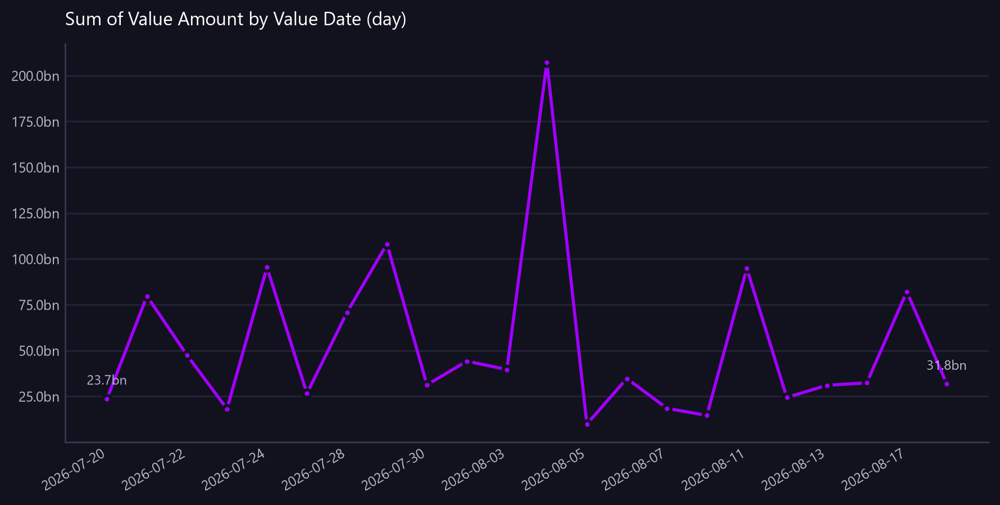

Sum of Value Amount by Value Date (day)
Daily transfer value across the period against the period average, with unusual days marked.
Asked as Show total daily transfer value across the month so I can see which days were unusual.

vs average % is a percentage and cannot share an axis with the amounts, so it is in the table only.
Commentary
The report provides a daily breakdown of total transfer values over the specified period, highlighting deviations from the average. The most notable day is August 4, 2026, with a transfer value of 207,385,479,699.57, which is 291.10% above the average, marked as unusual. This day stands out significantly compared to others, with the next highest value being July 29, 2026, at 108,139,872,566.63, which is 104.00% above the average. Operations should closely examine the transactions on August 4, 2026, to understand the cause of this substantial increase.
| Value Date (day) | Value Amount (Display) | vs average % | Unusual |
|---|---|---|---|
| 2026-07-20 | 23,712,009,066.32 | -55.30 | |
| 2026-07-21 | 79,698,523,613.55 | 50.30 | |
| 2026-07-22 | 47,516,356,985.01 | -10.40 | |
| 2026-07-23 | 18,134,841,533.76 | -65.80 | |
| 2026-07-24 | 95,374,346,372.42 | 79.90 | |
| 2026-07-27 | 26,572,619,921.00 | -49.90 | |
| 2026-07-28 | 70,753,102,844.56 | 33.40 | |
| 2026-07-29 | 108,139,872,566.63 | 104.00 | |
| 2026-07-30 | 31,258,367,571.00 | -41.00 | |
| 2026-07-31 | 44,188,619,527.80 | -16.70 | |
| 2026-08-03 | 39,603,127,051.16 | -25.30 | |
| 2026-08-04 | 207,385,479,699.57 | 291.10 | yes |
| 2026-08-05 | 9,879,547,348.61 | -81.40 | |
| 2026-08-06 | 34,739,658,692.39 | -34.50 | |
| 2026-08-07 | 18,483,460,753.93 | -65.10 | |
| 2026-08-10 | 14,567,458,591.77 | -72.50 | |
| 2026-08-11 | 94,767,143,800.73 | 78.70 | |
| 2026-08-12 | 24,339,798,938.75 | -54.10 | |
| 2026-08-13 | 31,023,108,227.22 | -41.50 | |
| 2026-08-14 | 32,353,137,983.95 | -39.00 | |
| 2026-08-17 | 82,125,921,162.68 | 54.90 | |
| 2026-08-18 | 31,810,912,598.18 | -40.00 |
Limitations of this view
- 1 of 22 periods sit more than two standard deviations from the period average of 53,019,427,948 and are marked as unusual.
- 'Value Amount' is held in each row's own currency and this result spans 27 currencies, so adding it would combine unlike units. 'Value Amount (Display)' was used instead, which is FX-translated to a single currency.
- The amounts are in different currencies and are therefore not directly comparable or summable.
- The view is scoped to the value date range from 2026-07-20 to 2026-08-18.
Dependencies
- The data is synthetic and non-production.
Downloads
{kind=link}
The Markdown documents everything considered, so a reader can hand it to an AI and ask follow-up questions about this view.
How this was produced
{
"view": "nostro_transfer",
"sheet": "Nostro Transfer View",
"source_file": "synthetic_liquidity_month.xlsx",
"mode": "aggregate",
"filters": [],
"group_by": [
"Value Date (day)"
],
"time_bucket": {
"column": "Value Date",
"granularity": "day"
},
"measures": [
"sum of Value Amount (Display)"
],
"columns": [],
"sort_by": "Value Date (day)",
"limit": null,
"join": null,
"derived": [],
"currency_corrections": [
"'Value Amount' is held in each row's own currency and this result spans 27 currencies, so adding it would combine unlike units. 'Value Amount (Display)' was used instead, which is FX-translated to a single currency.",
"1 of 22 periods sit more than two standard deviations from the period average of 53,019,427,948 and are marked as unusual."
],
"data_as_of": "2026-08-19T01:21:56",
"measure": "Value Amount (Display)",
"aggregation": "sum",
"rows_in_view": 4781,
"rows_after_filters": 4781,
"rows_returned": 22,
"executed_at": "2026-08-20T11:29:58"
}